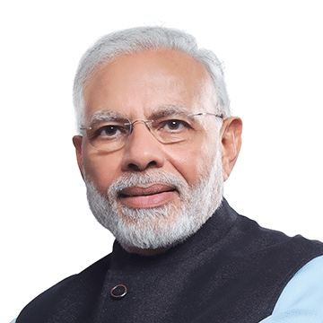
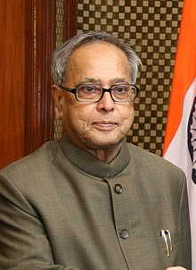
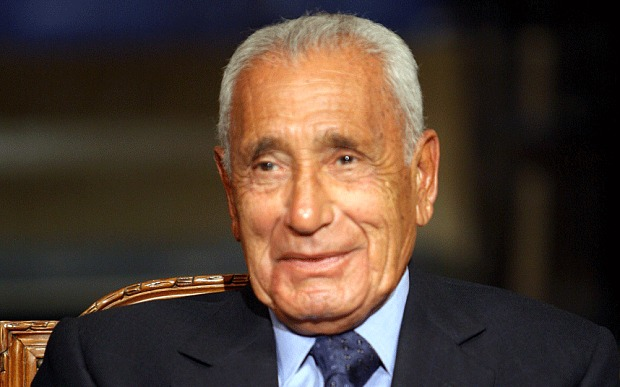
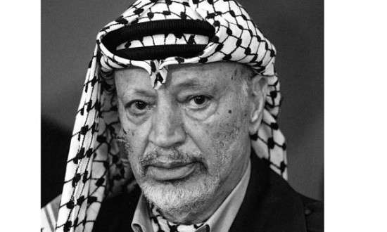

স্মরণে মুজিব
শেখ মুজিব নিহত হওয়ার খবরে আমি মর্মাহত। তিনি একজন মহান নেতা ছিলেন। তাঁর অনন্য সাধারণ সাহসিকতা এশিয়া ও আফ্রিকার জনগনের জন্য প্রেরণাদায়ক ছিল

ইন্দিরা গান্ধী
গণপ্রজাতন্ত্রী ভারতের সাবেক প্রধানমন্ত্রী
বঙ্গবন্ধু শেখ মুজিবুর রহমান গণতন্ত্রের প্রতিমূর্তি, এক বিশাল ব্যক্তিত্ব এবং ভারতের এক মহান বন্ধু
নরেন্দ্র মোদি
গণপ্রজাতন্ত্রী ভারতের প্রধানমন্ত্রী
যতকাল রবে পদ্মা যমুনা গৌরি মেঘনা বহমান ততকাল রবে কীর্তি তোমার শেখ মুজিবুর রহমান

অন্নদাশঙ্কর রায়
বাঙ্গালী কবি এবং প্রাবন্ধিক
বঙ্গবন্ধু সর্বকালের শ্রেষ্ঠ সাহসী নেতা
প্রণব মুখার্জী
ভারতের সাবেক রাষ্ট্রপতি
আমি হিমালয় দেখিনি, কিন্তু শেখ মুজিবকে দেখেছি। ব্যক্তিত্ব ও সাহসিকতায় তিনি হিমালয়ের মতো

ফিদেল ক্যাস্ত্রো
গণপ্রজাতন্ত্রী কিউবার সাবেক প্রেসিডেন্ট এবং কিংবদন্তি বিপ্লবী
শেখ মুজিবুর রহমান শুধু বাংলাদেশের সম্পত্তি নন। তিনি সমগ্র বাঙালির মুক্তির অগ্রদূত
মোহাম্মদ হাসনাইন হাইকল
প্রখ্যাত মিশরীয় সাংবাদিক
সহিংস ও কাপুরুষোচিতভাবে বাংলাদেশের জনগণের মাঝ থেকে এমন প্রতিভাবান ও সাহসী নেতৃত্বকে সরিয়ে দেওয়া কী যে মর্মান্তিক ঘটনা! তারপরও বাংলাদেশ এখন বঙ্গবন্ধুর স্বপ্ন বাস্তবায়নে এগিয়ে যাচ্ছে, তাঁরই কন্যার নেতৃত্বে। যুক্তরাষ্ট্র তার সেই স্বপ্ন পূরণে বন্ধু ও সমর্থক হতে পেরে গর্ববোধ করে।
জন কেরি
যুক্তরাষ্ট্রের সাবেক পররাষ্ট্রমন্ত্রী
আপোষহীন সংগ্রামী নেতৃত্ব এবং কুসুমকোমল হৃদয় ছিল মুজিবের চরিত্রের বিশেষত্ব
ইয়াসির আরাফাত
ফিলিস্তান মুক্তি মোর্চার সাবেক নেতা, নোবেল বিজয়ী
এই বিশেষ বাড়িটিতে এসে আমি বেশ আবেগাপ্লুত! বাড়িটি যথাযথভাবে সংরক্ষণ করা হয়েছে জেনে আমি কৃতজ্ঞ।